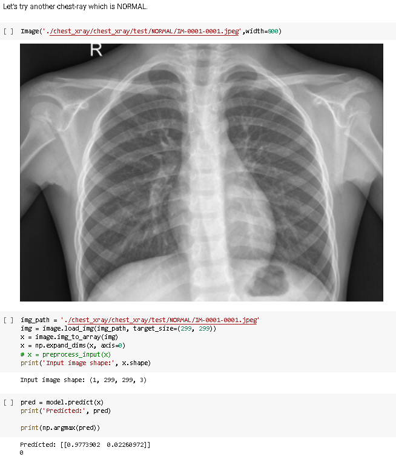

Pneumonia Detection Project
https://colab.research.google.com/drive/1cjfULgWB1573jeYUnLB4q0E-fpccMJn2?usp=sharing
The COVID-19 pandemic has disrupted the way of life for billions of people around the world. COVID-19 pneumonia is a serious illness that can be deadly. Given the situation above, I felt it was apt to work on pneumonia detection which could help doctors to more accurately detect pneumonia from chest x-ray images.
Thus, I successfully trained a model to be able to detect pneumonia in Chest X-Ray images, with an accuracy of 94.6%.
I did transfer learning using a famous Imagenet Model known as InceptionV3.
Technologies:
- - TensorflowJS
- - CNNs
- - Transfer Learning Using InceptionV3
- - Kaggle Dataset
Prediction Using Trained Model
